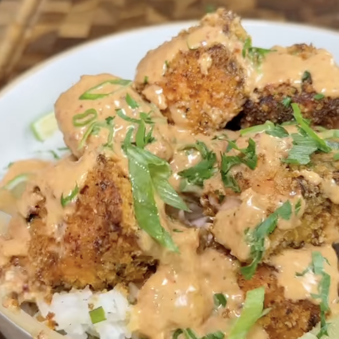

Bites de Salmón
Ingredientes:
- 1.5 lb de salmón, cortado en trozos gruesos
- Sal al gusto
- Pimienta al gusto
- 1/2 cucharadita de chile en polvo
- 1/2 cucharadita de Old Bay
- 1/2 cucharadita de condimento italiano
- 1 cucharada de aceite de oliva
- 1 taza de panko, para empanizar (sazonado con los mismos condimentos anteriores)
- Spray de aceite de aguacate
Salsa Chipotle Saludable:
- 1/2 taza de yogur griego natural
- 1/4 taza de mayonesa ligera o mayonesa kewpie
- 2 chiles chipotles
- ½ Limón
- Ajo
- Paprika
- 1 rociada Miel
Instrucciones:
- Cortar el salmón en cubos anchos
- Sazonarlo con sal y pimienta al gusto, así como chile en polvo, old bay, italiano y el aceite
- Cubre el salmón con panko hasta que queden cubiertos
- Ponlos en la bandeja y échales un spray de aceite de aguacate. Metelos a la airfryer hasta que
queden doraditos
- Para la salsa licua el yogur, mayonesa, chipotle, el ajo, paprika, jugo del limón y miel